Camera Calibration and 3D Reconstruction¶
The functions in this section use a so-called pinhole camera model. In this model, a scene view is formed by projecting 3D points into the image plane using a perspective transformation.
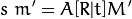
or

where:
- 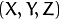 are the coordinates of a 3D point in the world coordinate space
are the coordinates of the projection point in pixels
is a camera matrix, or a matrix of intrinsic parameters
- 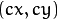 is a principal point that is usually at the image center
are the focal lengths expressed in pixel units.
Thus, if an image from the camera is
scaled by a factor, all of these parameters should
be scaled (multiplied/divided, respectively) by the same factor. The
matrix of intrinsic parameters does not depend on the scene viewed. So,
once estimated, it can be re-used as long as the focal length is fixed (in
case of zoom lens). The joint rotation-translation matrix
![[R|t]](../../../_images/math/fad27ce6ccd005e429215a332c9d7a3a93c8246b.png) is called a matrix of extrinsic parameters. It is used to describe the
camera motion around a static scene, or vice versa, rigid motion of an
object in front of a still camera. That is,
translates
coordinates of a point
to a coordinate system,
fixed with respect to the camera. The transformation above is equivalent
to the following (when
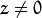 ):
is called a matrix of extrinsic parameters. It is used to describe the
camera motion around a static scene, or vice versa, rigid motion of an
object in front of a still camera. That is,
translates
coordinates of a point
to a coordinate system,
fixed with respect to the camera. The transformation above is equivalent
to the following (when
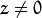 ):

The following figure illustrates the pinhole camera model.

Real lenses usually have some distortion, mostly radial distortion and slight tangential distortion. So, the above model is extended as:
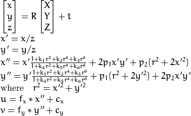
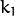, 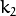, 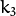, 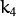, 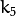, and 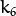 are radial distortion coefficients. 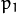 and 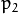 are tangential distortion coefficients. Higher-order coefficients are not considered in OpenCV.
The next figure shows two common types of radial distortion: barrel distortion (typically 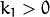 and pincushion distortion (typically 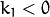).
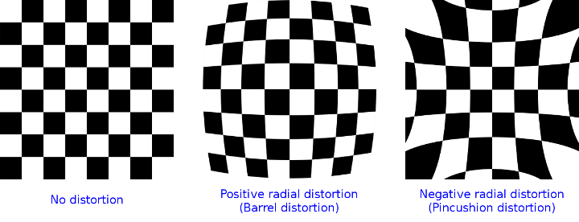In the functions below the coefficients are passed or returned as
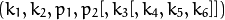
vector. That is, if the vector contains four elements, it means that
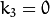 .
The distortion coefficients do not depend on the scene viewed. Thus, they also belong to the intrinsic camera parameters. And they remain the same regardless of the captured image resolution.
If, for example, a camera has been calibrated on images of
320 x 240 resolution, absolutely the same distortion coefficients can
be used for 640 x 480 images from the same camera while
 ,
,
 ,
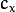, and
,
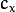, and
 need to be scaled appropriately.
need to be scaled appropriately.
The functions below use the above model to do the following:
- Project 3D points to the image plane given intrinsic and extrinsic parameters.
- Compute extrinsic parameters given intrinsic parameters, a few 3D points, and their projections.
- Estimate intrinsic and extrinsic camera parameters from several views of a known calibration pattern (every view is described by several 3D-2D point correspondences).
- Estimate the relative position and orientation of the stereo camera “heads” and compute the rectification transformation that makes the camera optical axes parallel.
Note
- A calibration sample for 3 cameras in horizontal position can be found at opencv_source_code/samples/cpp/3calibration.cpp
- A calibration sample based on a sequence of images can be found at opencv_source_code/samples/cpp/calibration.cpp
- A calibration sample in order to do 3D reconstruction can be found at opencv_source_code/samples/cpp/build3dmodel.cpp
- A calibration sample of an artificially generated camera and chessboard patterns can be found at opencv_source_code/samples/cpp/calibration_artificial.cpp
- A calibration example on stereo calibration can be found at opencv_source_code/samples/cpp/stereo_calib.cpp
- A calibration example on stereo matching can be found at opencv_source_code/samples/cpp/stereo_match.cpp
- (Python) A camera calibration sample can be found at opencv_source_code/samples/python2/calibrate.py
calibrateCamera¶
Finds the camera intrinsic and extrinsic parameters from several views of a calibration pattern.
-
C++:
calibrateCamera(InputArrayOfArrays objectPoints, InputArrayOfArrays imagePoints, Size imageSize, InputOutputArray cameraMatrix, InputOutputArray distCoeffs, OutputArrayOfArrays rvecs, OutputArrayOfArrays tvecs, int flags=0, TermCriteria criteria=TermCriteria( TermCriteria::COUNT+TermCriteria::EPS, 30, DBL_EPSILON) )¶
-
Python:
cv2.calibrateCamera(objectPoints, imagePoints, imageSize[, cameraMatrix[, distCoeffs[, rvecs[, tvecs[, flags[, criteria]]]]]]) → retval, cameraMatrix, distCoeffs, rvecs, tvecs¶
-
C:
cvCalibrateCamera2(const CvMat* object_points, const CvMat* image_points, const CvMat* point_counts, CvSize image_size, CvMat* camera_matrix, CvMat* distortion_coeffs, CvMat* rotation_vectors=NULL, CvMat* translation_vectors=NULL, int flags=0, CvTermCriteria term_crit=cvTermCriteria( CV_TERMCRIT_ITER+CV_TERMCRIT_EPS,30,DBL_EPSILON) )¶
-
Python:
cv.CalibrateCamera2(objectPoints, imagePoints, pointCounts, imageSize, cameraMatrix, distCoeffs, rvecs, tvecs, flags=0) → None¶ Parameters: - objectPoints –
In the new interface it is a vector of vectors of calibration pattern points in the calibration pattern coordinate space (e.g. std::vector<std::vector<cv::Vec3f>>). The outer vector contains as many elements as the number of the pattern views. If the same calibration pattern is shown in each view and it is fully visible, all the vectors will be the same. Although, it is possible to use partially occluded patterns, or even different patterns in different views. Then, the vectors will be different. The points are 3D, but since they are in a pattern coordinate system, then, if the rig is planar, it may make sense to put the model to a XY coordinate plane so that Z-coordinate of each input object point is 0.
In the old interface all the vectors of object points from different views are concatenated together.
- imagePoints –
In the new interface it is a vector of vectors of the projections of calibration pattern points (e.g. std::vector<std::vector<cv::Vec2f>>).
imagePoints.size()andobjectPoints.size()andimagePoints[i].size()must be equal toobjectPoints[i].size()for eachi.In the old interface all the vectors of object points from different views are concatenated together.
- point_counts – In the old interface this is a vector of integers, containing as many elements, as the number of views of the calibration pattern. Each element is the number of points in each view. Usually, all the elements are the same and equal to the number of feature points on the calibration pattern.
- imageSize – Size of the image used only to initialize the intrinsic camera matrix.
- cameraMatrix – Output 3x3 floating-point camera matrix
 . If
. If CV_CALIB_USE_INTRINSIC_GUESSand/orCV_CALIB_FIX_ASPECT_RATIOare specified, some or all offx, fy, cx, cymust be initialized before calling the function. - distCoeffs – Output vector of distortion coefficients 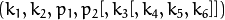 of 4, 5, or 8 elements.
- rvecs – Output vector of rotation vectors (see
Rodrigues()) estimated for each pattern view (e.g. std::vector<cv::Mat>>). That is, each k-th rotation vector together with the corresponding k-th translation vector (see the next output parameter description) brings the calibration pattern from the model coordinate space (in which object points are specified) to the world coordinate space, that is, a real position of the calibration pattern in the k-th pattern view (k=0.. M -1). - tvecs – Output vector of translation vectors estimated for each pattern view.
- flags –
Different flags that may be zero or a combination of the following values:
- CV_CALIB_USE_INTRINSIC_GUESS
cameraMatrixcontains valid initial values offx, fy, cx, cythat are optimized further. Otherwise,(cx, cy)is initially set to the image center (imageSizeis used), and focal distances are computed in a least-squares fashion. Note, that if intrinsic parameters are known, there is no need to use this function just to estimate extrinsic parameters. UsesolvePnP()instead. - CV_CALIB_FIX_PRINCIPAL_POINT The principal point is not changed during the global optimization. It stays at the center or at a different location specified when
CV_CALIB_USE_INTRINSIC_GUESSis set too. - CV_CALIB_FIX_ASPECT_RATIO The functions considers only
fyas a free parameter. The ratiofx/fystays the same as in the inputcameraMatrix. WhenCV_CALIB_USE_INTRINSIC_GUESSis not set, the actual input values offxandfyare ignored, only their ratio is computed and used further. - CV_CALIB_ZERO_TANGENT_DIST Tangential distortion coefficients 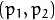 are set to zeros and stay zero.
- CV_CALIB_FIX_K1,...,CV_CALIB_FIX_K6 The corresponding radial distortion coefficient is not changed during the optimization. If
CV_CALIB_USE_INTRINSIC_GUESSis set, the coefficient from the supplieddistCoeffsmatrix is used. Otherwise, it is set to 0. - CV_CALIB_RATIONAL_MODEL Coefficients k4, k5, and k6 are enabled. To provide the backward compatibility, this extra flag should be explicitly specified to make the calibration function use the rational model and return 8 coefficients. If the flag is not set, the function computes and returns only 5 distortion coefficients.
- CV_CALIB_USE_INTRINSIC_GUESS
- criteria – Termination criteria for the iterative optimization algorithm.
- term_crit – same as
criteria.
- objectPoints –
The function estimates the intrinsic camera
parameters and extrinsic parameters for each of the views. The algorithm is based on [Zhang2000] and [BouguetMCT]. The coordinates of 3D object points and their corresponding 2D projections
in each view must be specified. That may be achieved by using an
object with a known geometry and easily detectable feature points.
Such an object is called a calibration rig or calibration pattern,
and OpenCV has built-in support for a chessboard as a calibration
rig (see
findChessboardCorners() ). Currently, initialization
of intrinsic parameters (when CV_CALIB_USE_INTRINSIC_GUESS is not set) is only implemented for planar calibration patterns
(where Z-coordinates of the object points must be all zeros). 3D
calibration rigs can also be used as long as initial cameraMatrix is provided.
The algorithm performs the following steps:
- Compute the initial intrinsic parameters (the option only available for planar calibration patterns) or read them from the input parameters. The distortion coefficients are all set to zeros initially unless some of
CV_CALIB_FIX_K?are specified. - Estimate the initial camera pose as if the intrinsic parameters have been already known. This is done using
solvePnP(). - Run the global Levenberg-Marquardt optimization algorithm to minimize the reprojection error, that is, the total sum of squared distances between the observed feature points
imagePointsand the projected (using the current estimates for camera parameters and the poses) object pointsobjectPoints. SeeprojectPoints()for details.
The function returns the final re-projection error.
Note
If you use a non-square (=non-NxN) grid and findChessboardCorners() for calibration, and calibrateCamera returns bad values (zero distortion coefficients, an image center very far from (w/2-0.5,h/2-0.5), and/or large differences between and (ratios of 10:1 or more)), then you have probably used patternSize=cvSize(rows,cols) instead of using patternSize=cvSize(cols,rows) in findChessboardCorners() .
calibrationMatrixValues¶
Computes useful camera characteristics from the camera matrix.
-
C++:
calibrationMatrixValues(InputArray cameraMatrix, Size imageSize, double apertureWidth, double apertureHeight, double& fovx, double& fovy, double& focalLength, Point2d& principalPoint, double& aspectRatio)¶
-
Python:
cv2.calibrationMatrixValues(cameraMatrix, imageSize, apertureWidth, apertureHeight) → fovx, fovy, focalLength, principalPoint, aspectRatio¶ Parameters: - cameraMatrix – Input camera matrix that can be estimated by
calibrateCamera()orstereoCalibrate(). - imageSize – Input image size in pixels.
- apertureWidth – Physical width in mm of the sensor.
- apertureHeight – Physical height in mm of the sensor.
- fovx – Output field of view in degrees along the horizontal sensor axis.
- fovy – Output field of view in degrees along the vertical sensor axis.
- focalLength – Focal length of the lens in mm.
- principalPoint – Principal point in mm.
- aspectRatio – 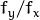
- cameraMatrix – Input camera matrix that can be estimated by
The function computes various useful camera characteristics from the previously estimated camera matrix.
Note
Do keep in mind that the unity measure ‘mm’ stands for whatever unit of measure one chooses for the chessboard pitch (it can thus be any value).
composeRT¶
Combines two rotation-and-shift transformations.
-
C++:
composeRT(InputArray rvec1, InputArray tvec1, InputArray rvec2, InputArray tvec2, OutputArray rvec3, OutputArray tvec3, OutputArray dr3dr1=noArray(), OutputArray dr3dt1=noArray(), OutputArray dr3dr2=noArray(), OutputArray dr3dt2=noArray(), OutputArray dt3dr1=noArray(), OutputArray dt3dt1=noArray(), OutputArray dt3dr2=noArray(), OutputArray dt3dt2=noArray() )¶
-
Python:
cv2.composeRT(rvec1, tvec1, rvec2, tvec2[, rvec3[, tvec3[, dr3dr1[, dr3dt1[, dr3dr2[, dr3dt2[, dt3dr1[, dt3dt1[, dt3dr2[, dt3dt2]]]]]]]]]]) → rvec3, tvec3, dr3dr1, dr3dt1, dr3dr2, dr3dt2, dt3dr1, dt3dt1, dt3dr2, dt3dt2¶ Parameters: - rvec1 – First rotation vector.
- tvec1 – First translation vector.
- rvec2 – Second rotation vector.
- tvec2 – Second translation vector.
- rvec3 – Output rotation vector of the superposition.
- tvec3 – Output translation vector of the superposition.
- d*d* – Optional output derivatives of
rvec3ortvec3with regard torvec1,rvec2,tvec1andtvec2, respectively.
The functions compute:
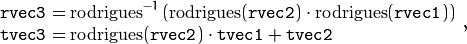
where 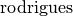 denotes a rotation vector to a rotation matrix transformation, and
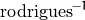 denotes the inverse transformation. See Rodrigues() for details.
Also, the functions can compute the derivatives of the output vectors with regards to the input vectors (see matMulDeriv() ).
The functions are used inside stereoCalibrate() but can also be used in your own code where Levenberg-Marquardt or another gradient-based solver is used to optimize a function that contains a matrix multiplication.
computeCorrespondEpilines¶
For points in an image of a stereo pair, computes the corresponding epilines in the other image.
-
C++:
computeCorrespondEpilines(InputArray points, int whichImage, InputArray F, OutputArray lines)¶
-
C:
cvComputeCorrespondEpilines(const CvMat* points, int which_image, const CvMat* fundamental_matrix, CvMat* correspondent_lines)¶
-
Python:
cv.ComputeCorrespondEpilines(points, whichImage, F, lines) → None¶ Parameters: - points – Input points. 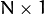 or 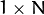 matrix of type
CV_32FC2orvector<Point2f>. - whichImage – Index of the image (1 or 2) that contains the
points. - F – Fundamental matrix that can be estimated using
findFundamentalMat()orstereoRectify(). - lines – Output vector of the epipolar lines corresponding to the points in the other image. Each line 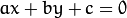 is encoded by 3 numbers 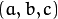 .
- points – Input points. 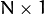 or 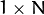 matrix of type
For every point in one of the two images of a stereo pair, the function finds the equation of the corresponding epipolar line in the other image.
From the fundamental matrix definition (see
findFundamentalMat() ),
line
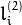 in the second image for the point
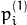 in the first image (when whichImage=1 ) is computed as:
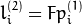
And vice versa, when whichImage=2,
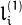 is computed from
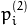 as:
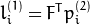
Line coefficients are defined up to a scale. They are normalized so that 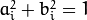 .
convertPointsToHomogeneous¶
Converts points from Euclidean to homogeneous space.
-
C++:
convertPointsToHomogeneous(InputArray src, OutputArray dst)¶
-
Python:
cv2.convertPointsToHomogeneous(src[, dst]) → dst¶ Parameters: - src – Input vector of
N-dimensional points. - dst – Output vector of
N+1-dimensional points.
- src – Input vector of
The function converts points from Euclidean to homogeneous space by appending 1’s to the tuple of point coordinates. That is, each point (x1, x2, ..., xn) is converted to (x1, x2, ..., xn, 1).
convertPointsFromHomogeneous¶
Converts points from homogeneous to Euclidean space.
-
C++:
convertPointsFromHomogeneous(InputArray src, OutputArray dst)¶
-
Python:
cv2.convertPointsFromHomogeneous(src[, dst]) → dst¶ Parameters: - src – Input vector of
N-dimensional points. - dst – Output vector of
N-1-dimensional points.
- src – Input vector of
The function converts points homogeneous to Euclidean space using perspective projection. That is, each point (x1, x2, ... x(n-1), xn) is converted to (x1/xn, x2/xn, ..., x(n-1)/xn). When xn=0, the output point coordinates will be (0,0,0,...).
convertPointsHomogeneous¶
Converts points to/from homogeneous coordinates.
-
C++:
convertPointsHomogeneous(InputArray src, OutputArray dst)¶
-
C:
cvConvertPointsHomogeneous(const CvMat* src, CvMat* dst)¶
-
Python:
cv.ConvertPointsHomogeneous(src, dst) → None¶ Parameters: - src – Input array or vector of 2D, 3D, or 4D points.
- dst – Output vector of 2D, 3D, or 4D points.
The function converts 2D or 3D points from/to homogeneous coordinates by calling either convertPointsToHomogeneous() or convertPointsFromHomogeneous().
Note
The function is obsolete. Use one of the previous two functions instead.
correctMatches¶
Refines coordinates of corresponding points.
-
C++:
correctMatches(InputArray F, InputArray points1, InputArray points2, OutputArray newPoints1, OutputArray newPoints2)¶
-
Python:
cv2.correctMatches(F, points1, points2[, newPoints1[, newPoints2]]) → newPoints1, newPoints2¶
-
C:
cvCorrectMatches(CvMat* F, CvMat* points1, CvMat* points2, CvMat* new_points1, CvMat* new_points2)¶ Parameters: - F – 3x3 fundamental matrix.
- points1 – 1xN array containing the first set of points.
- points2 – 1xN array containing the second set of points.
- newPoints1 – The optimized points1.
- newPoints2 – The optimized points2.
The function implements the Optimal Triangulation Method (see Multiple View Geometry for details). For each given point correspondence points1[i] <-> points2[i], and a fundamental matrix F, it computes the corrected correspondences newPoints1[i] <-> newPoints2[i] that minimize the geometric error 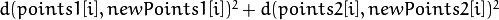 (where 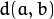 is the geometric distance between points 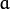 and 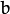 ) subject to the epipolar constraint 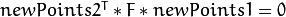 .
decomposeProjectionMatrix¶
Decomposes a projection matrix into a rotation matrix and a camera matrix.
-
C++:
decomposeProjectionMatrix(InputArray projMatrix, OutputArray cameraMatrix, OutputArray rotMatrix, OutputArray transVect, OutputArray rotMatrixX=noArray(), OutputArray rotMatrixY=noArray(), OutputArray rotMatrixZ=noArray(), OutputArray eulerAngles=noArray() )¶
-
Python:
cv2.decomposeProjectionMatrix(projMatrix[, cameraMatrix[, rotMatrix[, transVect[, rotMatrixX[, rotMatrixY[, rotMatrixZ[, eulerAngles]]]]]]]) → cameraMatrix, rotMatrix, transVect, rotMatrixX, rotMatrixY, rotMatrixZ, eulerAngles¶
-
C:
cvDecomposeProjectionMatrix(const CvMat* projMatr, CvMat* calibMatr, CvMat* rotMatr, CvMat* posVect, CvMat* rotMatrX=NULL, CvMat* rotMatrY=NULL, CvMat* rotMatrZ=NULL, CvPoint3D64f* eulerAngles=NULL )¶
-
Python:
cv.DecomposeProjectionMatrix(projMatrix, cameraMatrix, rotMatrix, transVect, rotMatrX=None, rotMatrY=None, rotMatrZ=None) → eulerAngles¶ Parameters: - projMatrix – 3x4 input projection matrix P.
- cameraMatrix – Output 3x3 camera matrix K.
- rotMatrix – Output 3x3 external rotation matrix R.
- transVect – Output 4x1 translation vector T.
- rotMatrX – Optional 3x3 rotation matrix around x-axis.
- rotMatrY – Optional 3x3 rotation matrix around y-axis.
- rotMatrZ – Optional 3x3 rotation matrix around z-axis.
- eulerAngles – Optional three-element vector containing three Euler angles of rotation in degrees.
The function computes a decomposition of a projection matrix into a calibration and a rotation matrix and the position of a camera.
It optionally returns three rotation matrices, one for each axis, and three Euler angles that could be used in OpenGL. Note, there is always more than one sequence of rotations about the three principle axes that results in the same orientation of an object, eg. see [Slabaugh]. Returned tree rotation matrices and corresponding three Euler angules are only one of the possible solutions.
The function is based on
RQDecomp3x3() .
drawChessboardCorners¶
Renders the detected chessboard corners.
-
C++:
drawChessboardCorners(InputOutputArray image, Size patternSize, InputArray corners, bool patternWasFound)¶
-
Python:
cv2.drawChessboardCorners(image, patternSize, corners, patternWasFound) → None¶
-
C:
cvDrawChessboardCorners(CvArr* image, CvSize pattern_size, CvPoint2D32f* corners, int count, int pattern_was_found)¶
-
Python:
cv.DrawChessboardCorners(image, patternSize, corners, patternWasFound) → None¶ Parameters: - image – Destination image. It must be an 8-bit color image.
- patternSize – Number of inner corners per a chessboard row and column
(patternSize = cv::Size(points_per_row,points_per_column)). - corners – Array of detected corners, the output of
findChessboardCorners. - patternWasFound – Parameter indicating whether the complete board was found or not. The return value of
findChessboardCorners()should be passed here.
The function draws individual chessboard corners detected either as red circles if the board was not found, or as colored corners connected with lines if the board was found.
findChessboardCorners¶
Finds the positions of internal corners of the chessboard.
-
C++:
findChessboardCorners(InputArray image, Size patternSize, OutputArray corners, int flags=CALIB_CB_ADAPTIVE_THRESH+CALIB_CB_NORMALIZE_IMAGE )¶
-
Python:
cv2.findChessboardCorners(image, patternSize[, corners[, flags]]) → retval, corners¶
-
C:
cvFindChessboardCorners(const void* image, CvSize pattern_size, CvPoint2D32f* corners, int* corner_count=NULL, int flags=CV_CALIB_CB_ADAPTIVE_THRESH+CV_CALIB_CB_NORMALIZE_IMAGE )¶
-
Python:
cv.FindChessboardCorners(image, patternSize, flags=CV_CALIB_CB_ADAPTIVE_THRESH) → corners¶ Parameters: - image – Source chessboard view. It must be an 8-bit grayscale or color image.
- patternSize – Number of inner corners per a chessboard row and column
( patternSize = cvSize(points_per_row,points_per_colum) = cvSize(columns,rows) ). - corners – Output array of detected corners.
- flags –
Various operation flags that can be zero or a combination of the following values:
- CALIB_CB_ADAPTIVE_THRESH Use adaptive thresholding to convert the image to black and white, rather than a fixed threshold level (computed from the average image brightness).
- CALIB_CB_NORMALIZE_IMAGE Normalize the image gamma with
equalizeHist()before applying fixed or adaptive thresholding. - CALIB_CB_FILTER_QUADS Use additional criteria (like contour area, perimeter, square-like shape) to filter out false quads extracted at the contour retrieval stage.
- CALIB_CB_FAST_CHECK Run a fast check on the image that looks for chessboard corners, and shortcut the call if none is found. This can drastically speed up the call in the degenerate condition when no chessboard is observed.
The function attempts to determine
whether the input image is a view of the chessboard pattern and
locate the internal chessboard corners. The function returns a non-zero
value if all of the corners are found and they are placed
in a certain order (row by row, left to right in every row). Otherwise, if the function fails to find all the corners or reorder
them, it returns 0. For example, a regular chessboard has 8 x 8
squares and 7 x 7 internal corners, that is, points where the black squares touch each other.
The detected coordinates are approximate, and to determine their positions more accurately, the function calls cornerSubPix().
You also may use the function cornerSubPix() with different parameters if returned coordinates are not accurate enough.
Sample usage of detecting and drawing chessboard corners:
Size patternsize(8,6); //interior number of corners
Mat gray = ....; //source image
vector<Point2f> corners; //this will be filled by the detected corners
//CALIB_CB_FAST_CHECK saves a lot of time on images
//that do not contain any chessboard corners
bool patternfound = findChessboardCorners(gray, patternsize, corners,
CALIB_CB_ADAPTIVE_THRESH + CALIB_CB_NORMALIZE_IMAGE
+ CALIB_CB_FAST_CHECK);
if(patternfound)
cornerSubPix(gray, corners, Size(11, 11), Size(-1, -1),
TermCriteria(CV_TERMCRIT_EPS + CV_TERMCRIT_ITER, 30, 0.1));
drawChessboardCorners(img, patternsize, Mat(corners), patternfound);
Note
The function requires white space (like a square-thick border, the wider the better) around the board to make the detection more robust in various environments. Otherwise, if there is no border and the background is dark, the outer black squares cannot be segmented properly and so the square grouping and ordering algorithm fails.
findCirclesGrid¶
Finds centers in the grid of circles.
-
C++:
findCirclesGrid(InputArray image, Size patternSize, OutputArray centers, int flags=CALIB_CB_SYMMETRIC_GRID, const Ptr<FeatureDetector>& blobDetector=new SimpleBlobDetector() )¶
-
Python:
cv2.findCirclesGridDefault(image, patternSize[, centers[, flags]]) → retval, centers¶ Parameters: - image – grid view of input circles; it must be an 8-bit grayscale or color image.
- patternSize – number of circles per row and column
( patternSize = Size(points_per_row, points_per_colum) ). - centers – output array of detected centers.
- flags –
various operation flags that can be one of the following values:
- CALIB_CB_SYMMETRIC_GRID uses symmetric pattern of circles.
- CALIB_CB_ASYMMETRIC_GRID uses asymmetric pattern of circles.
- CALIB_CB_CLUSTERING uses a special algorithm for grid detection. It is more robust to perspective distortions but much more sensitive to background clutter.
- blobDetector – feature detector that finds blobs like dark circles on light background.
The function attempts to determine whether the input image contains a grid of circles. If it is, the function locates centers of the circles. The function returns a non-zero value if all of the centers have been found and they have been placed in a certain order (row by row, left to right in every row). Otherwise, if the function fails to find all the corners or reorder them, it returns 0.
Sample usage of detecting and drawing the centers of circles:
Size patternsize(7,7); //number of centers
Mat gray = ....; //source image
vector<Point2f> centers; //this will be filled by the detected centers
bool patternfound = findCirclesGrid(gray, patternsize, centers);
drawChessboardCorners(img, patternsize, Mat(centers), patternfound);
Note
The function requires white space (like a square-thick border, the wider the better) around the board to make the detection more robust in various environments.
solvePnP¶
Finds an object pose from 3D-2D point correspondences.
-
C++:
solvePnP(InputArray objectPoints, InputArray imagePoints, InputArray cameraMatrix, InputArray distCoeffs, OutputArray rvec, OutputArray tvec, bool useExtrinsicGuess=false, int flags=ITERATIVE )¶
-
Python:
cv2.solvePnP(objectPoints, imagePoints, cameraMatrix, distCoeffs[, rvec[, tvec[, useExtrinsicGuess[, flags]]]]) → retval, rvec, tvec¶
-
C:
cvFindExtrinsicCameraParams2(const CvMat* object_points, const CvMat* image_points, const CvMat* camera_matrix, const CvMat* distortion_coeffs, CvMat* rotation_vector, CvMat* translation_vector, int use_extrinsic_guess=0 )¶
-
Python:
cv.FindExtrinsicCameraParams2(objectPoints, imagePoints, cameraMatrix, distCoeffs, rvec, tvec, useExtrinsicGuess=0) → None¶ Parameters: - objectPoints – Array of object points in the object coordinate space, 3xN/Nx3 1-channel or 1xN/Nx1 3-channel, where N is the number of points.
vector<Point3f>can be also passed here. - imagePoints – Array of corresponding image points, 2xN/Nx2 1-channel or 1xN/Nx1 2-channel, where N is the number of points.
vector<Point2f>can be also passed here. - cameraMatrix – Input camera matrix
 .
. - distCoeffs – Input vector of distortion coefficients of 4, 5, or 8 elements. If the vector is NULL/empty, the zero distortion coefficients are assumed.
- rvec – Output rotation vector (see
Rodrigues()) that, together withtvec, brings points from the model coordinate system to the camera coordinate system. - tvec – Output translation vector.
- useExtrinsicGuess – If true (1), the function uses the provided
rvecandtvecvalues as initial approximations of the rotation and translation vectors, respectively, and further optimizes them. - flags –
Method for solving a PnP problem:
- CV_ITERATIVE Iterative method is based on Levenberg-Marquardt optimization. In this case the function finds such a pose that minimizes reprojection error, that is the sum of squared distances between the observed projections
imagePointsand the projected (usingprojectPoints())objectPoints. - CV_P3P Method is based on the paper of X.S. Gao, X.-R. Hou, J. Tang, H.-F. Chang “Complete Solution Classification for the Perspective-Three-Point Problem”. In this case the function requires exactly four object and image points.
- CV_EPNP Method has been introduced by F.Moreno-Noguer, V.Lepetit and P.Fua in the paper “EPnP: Efficient Perspective-n-Point Camera Pose Estimation”.
- CV_ITERATIVE Iterative method is based on Levenberg-Marquardt optimization. In this case the function finds such a pose that minimizes reprojection error, that is the sum of squared distances between the observed projections
- objectPoints – Array of object points in the object coordinate space, 3xN/Nx3 1-channel or 1xN/Nx1 3-channel, where N is the number of points.
The function estimates the object pose given a set of object points, their corresponding image projections, as well as the camera matrix and the distortion coefficients.
Note
- An example of how to use solvePNP for planar augmented reality can be found at opencv_source_code/samples/python2/plane_ar.py
solvePnPRansac¶
Finds an object pose from 3D-2D point correspondences using the RANSAC scheme.
-
C++:
solvePnPRansac(InputArray objectPoints, InputArray imagePoints, InputArray cameraMatrix, InputArray distCoeffs, OutputArray rvec, OutputArray tvec, bool useExtrinsicGuess=false, int iterationsCount=100, float reprojectionError=8.0, int minInliersCount=100, OutputArray inliers=noArray(), int flags=ITERATIVE )¶
-
Python:
cv2.solvePnPRansac(objectPoints, imagePoints, cameraMatrix, distCoeffs[, rvec[, tvec[, useExtrinsicGuess[, iterationsCount[, reprojectionError[, minInliersCount[, inliers[, flags]]]]]]]]) → rvec, tvec, inliers¶ Parameters: - objectPoints – Array of object points in the object coordinate space, 3xN/Nx3 1-channel or 1xN/Nx1 3-channel, where N is the number of points.
vector<Point3f>can be also passed here. - imagePoints – Array of corresponding image points, 2xN/Nx2 1-channel or 1xN/Nx1 2-channel, where N is the number of points.
vector<Point2f>can be also passed here. - cameraMatrix – Input camera matrix .
- distCoeffs – Input vector of distortion coefficients of 4, 5, or 8 elements. If the vector is NULL/empty, the zero distortion coefficients are assumed.
- rvec – Output rotation vector (see
Rodrigues()) that, together withtvec, brings points from the model coordinate system to the camera coordinate system. - tvec – Output translation vector.
- useExtrinsicGuess – If true (1), the function uses the provided
rvecandtvecvalues as initial approximations of the rotation and translation vectors, respectively, and further optimizes them. - iterationsCount – Number of iterations.
- reprojectionError – Inlier threshold value used by the RANSAC procedure. The parameter value is the maximum allowed distance between the observed and computed point projections to consider it an inlier.
- minInliersCount – Number of inliers. If the algorithm at some stage finds more inliers than
minInliersCount, it finishes. - inliers – Output vector that contains indices of inliers in
objectPointsandimagePoints. - flags – Method for solving a PnP problem (see
solvePnP()).
- objectPoints – Array of object points in the object coordinate space, 3xN/Nx3 1-channel or 1xN/Nx1 3-channel, where N is the number of points.
The function estimates an object pose given a set of object points, their corresponding image projections, as well as the camera matrix and the distortion coefficients. This function finds such a pose that minimizes reprojection error, that is, the sum of squared distances between the observed projections imagePoints and the projected (using
projectPoints() ) objectPoints. The use of RANSAC makes the function resistant to outliers. The function is parallelized with the TBB library.
findFundamentalMat¶
Calculates a fundamental matrix from the corresponding points in two images.
-
C++:
findFundamentalMat(InputArray points1, InputArray points2, int method=FM_RANSAC, double param1=3., double param2=0.99, OutputArray mask=noArray() )¶
-
Python:
cv2.findFundamentalMat(points1, points2[, method[, param1[, param2[, mask]]]]) → retval, mask¶
-
C:
cvFindFundamentalMat(const CvMat* points1, const CvMat* points2, CvMat* fundamental_matrix, int method=CV_FM_RANSAC, double param1=3., double param2=0.99, CvMat* status=NULL )¶
-
Python:
cv.FindFundamentalMat(points1, points2, fundamentalMatrix, method=CV_FM_RANSAC, param1=1., param2=0.99, status=None) → retval¶ Parameters: - points1 – Array of
Npoints from the first image. The point coordinates should be floating-point (single or double precision). - points2 – Array of the second image points of the same size and format as
points1. - method –
Method for computing a fundamental matrix.
- CV_FM_7POINT for a 7-point algorithm. 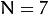
- CV_FM_8POINT for an 8-point algorithm. 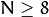
- CV_FM_RANSAC for the RANSAC algorithm.
- CV_FM_LMEDS for the LMedS algorithm.
- param1 – Parameter used for RANSAC. It is the maximum distance from a point to an epipolar line in pixels, beyond which the point is considered an outlier and is not used for computing the final fundamental matrix. It can be set to something like 1-3, depending on the accuracy of the point localization, image resolution, and the image noise.
- param2 – Parameter used for the RANSAC or LMedS methods only. It specifies a desirable level of confidence (probability) that the estimated matrix is correct.
- mask – Output array of N elements, every element of which is set to 0 for outliers and to 1 for the other points. The array is computed only in the RANSAC and LMedS methods. For other methods, it is set to all 1’s.
- points1 – Array of
The epipolar geometry is described by the following equation:
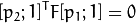
where 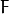 is a fundamental matrix, and are corresponding points in the first and the second images, respectively.
The function calculates the fundamental matrix using one of four methods listed above and returns the found fundamental matrix. Normally just one matrix is found. But in case of the 7-point algorithm, the function may return up to 3 solutions ( 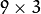 matrix that stores all 3 matrices sequentially).
The calculated fundamental matrix may be passed further to
computeCorrespondEpilines() that finds the epipolar lines
corresponding to the specified points. It can also be passed to
stereoRectifyUncalibrated() to compute the rectification transformation.
// Example. Estimation of fundamental matrix using the RANSAC algorithm
int point_count = 100;
vector<Point2f> points1(point_count);
vector<Point2f> points2(point_count);
// initialize the points here ... */
for( int i = 0; i < point_count; i++ )
{
points1[i] = ...;
points2[i] = ...;
}
Mat fundamental_matrix =
findFundamentalMat(points1, points2, FM_RANSAC, 3, 0.99);
findHomography¶
Finds a perspective transformation between two planes.
-
C++:
findHomography(InputArray srcPoints, InputArray dstPoints, int method=0, double ransacReprojThreshold=3, OutputArray mask=noArray() )¶
-
Python:
cv2.findHomography(srcPoints, dstPoints[, method[, ransacReprojThreshold[, mask]]]) → retval, mask¶
-
C:
cvFindHomography(const CvMat* src_points, const CvMat* dst_points, CvMat* homography, int method=0, double ransacReprojThreshold=3, CvMat* mask=0 )¶
-
Python:
cv.FindHomography(srcPoints, dstPoints, H, method=0, ransacReprojThreshold=3.0, status=None) → None¶ Parameters: - srcPoints – Coordinates of the points in the original plane, a matrix of the type
CV_32FC2orvector<Point2f>. - dstPoints – Coordinates of the points in the target plane, a matrix of the type
CV_32FC2or avector<Point2f>. - method –
Method used to computed a homography matrix. The following methods are possible:
- 0 - a regular method using all the points
- CV_RANSAC - RANSAC-based robust method
- CV_LMEDS - Least-Median robust method
- ransacReprojThreshold –
Maximum allowed reprojection error to treat a point pair as an inlier (used in the RANSAC method only). That is, if
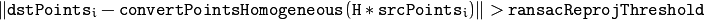
then the point
 is considered an outlier. If
is considered an outlier. If srcPointsanddstPointsare measured in pixels, it usually makes sense to set this parameter somewhere in the range of 1 to 10. - mask – Optional output mask set by a robust method (
CV_RANSACorCV_LMEDS). Note that the input mask values are ignored.
- srcPoints – Coordinates of the points in the original plane, a matrix of the type
The functions find and return the perspective transformation 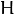 between the source and the destination planes:
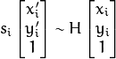
so that the back-projection error
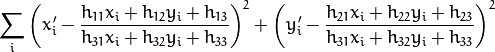
is minimized. If the parameter method is set to the default value 0, the function
uses all the point pairs to compute an initial homography estimate with a simple least-squares scheme.
However, if not all of the point pairs (
, ) fit the rigid perspective transformation (that is, there
are some outliers), this initial estimate will be poor.
In this case, you can use one of the two robust methods. Both methods, RANSAC and LMeDS , try many different random subsets
of the corresponding point pairs (of four pairs each), estimate
the homography matrix using this subset and a simple least-square
algorithm, and then compute the quality/goodness of the computed homography
(which is the number of inliers for RANSAC or the median re-projection
error for LMeDs). The best subset is then used to produce the initial
estimate of the homography matrix and the mask of inliers/outliers.
Regardless of the method, robust or not, the computed homography matrix is refined further (using inliers only in case of a robust method) with the Levenberg-Marquardt method to reduce the re-projection error even more.
The method RANSAC can handle practically any ratio of outliers
but it needs a threshold to distinguish inliers from outliers.
The method LMeDS does not need any threshold but it works
correctly only when there are more than 50% of inliers. Finally,
if there are no outliers and the noise is rather small, use the default method (method=0).
The function is used to find initial intrinsic and extrinsic matrices. Homography matrix is determined up to a scale. Thus, it is normalized so that . Note that whenever an H matrix cannot be estimated, an empty one will be returned.
See also
getAffineTransform(),
getPerspectiveTransform(),
estimateRigidTransform(),
warpPerspective(),
perspectiveTransform()
Note
- A example on calculating a homography for image matching can be found at opencv_source_code/samples/cpp/video_homography.cpp
estimateAffine3D¶
Computes an optimal affine transformation between two 3D point sets.
-
C++:
estimateAffine3D(InputArray src, InputArray dst, OutputArray out, OutputArray inliers, double ransacThreshold=3, double confidence=0.99)¶
-
Python:
cv2.estimateAffine3D(src, dst[, out[, inliers[, ransacThreshold[, confidence]]]]) → retval, out, inliers¶ Parameters: - src – First input 3D point set.
- dst – Second input 3D point set.
- out – Output 3D affine transformation matrix .
- inliers – Output vector indicating which points are inliers.
- ransacThreshold – Maximum reprojection error in the RANSAC algorithm to consider a point as an inlier.
- confidence – Confidence level, between 0 and 1, for the estimated transformation. Anything between 0.95 and 0.99 is usually good enough. Values too close to 1 can slow down the estimation significantly. Values lower than 0.8-0.9 can result in an incorrectly estimated transformation.
The function estimates an optimal 3D affine transformation between two 3D point sets using the RANSAC algorithm.
filterSpeckles¶
Filters off small noise blobs (speckles) in the disparity map
-
C++:
filterSpeckles(InputOutputArray img, double newVal, int maxSpeckleSize, double maxDiff, InputOutputArray buf=noArray() )¶
-
Python:
cv2.filterSpeckles(img, newVal, maxSpeckleSize, maxDiff[, buf]) → None¶ Parameters: - img – The input 16-bit signed disparity image
- newVal – The disparity value used to paint-off the speckles
- maxSpeckleSize – The maximum speckle size to consider it a speckle. Larger blobs are not affected by the algorithm
- maxDiff – Maximum difference between neighbor disparity pixels to put them into the same blob. Note that since StereoBM, StereoSGBM and may be other algorithms return a fixed-point disparity map, where disparity values are multiplied by 16, this scale factor should be taken into account when specifying this parameter value.
- buf – The optional temporary buffer to avoid memory allocation within the function.
getOptimalNewCameraMatrix¶
Returns the new camera matrix based on the free scaling parameter.
-
C++:
getOptimalNewCameraMatrix(InputArray cameraMatrix, InputArray distCoeffs, Size imageSize, double alpha, Size newImgSize=Size(), Rect* validPixROI=0, bool centerPrincipalPoint=false )¶
-
Python:
cv2.getOptimalNewCameraMatrix(cameraMatrix, distCoeffs, imageSize, alpha[, newImgSize[, centerPrincipalPoint]]) → retval, validPixROI¶
-
C:
cvGetOptimalNewCameraMatrix(const CvMat* camera_matrix, const CvMat* dist_coeffs, CvSize image_size, double alpha, CvMat* new_camera_matrix, CvSize new_imag_size=cvSize(0,0), CvRect* valid_pixel_ROI=0, int center_principal_point=0 )¶
-
Python:
cv.GetOptimalNewCameraMatrix(cameraMatrix, distCoeffs, imageSize, alpha, newCameraMatrix, newImageSize=(0, 0), validPixROI=0, centerPrincipalPoint=0) → None¶ Parameters: - cameraMatrix – Input camera matrix.
- distCoeffs – Input vector of distortion coefficients of 4, 5, or 8 elements. If the vector is NULL/empty, the zero distortion coefficients are assumed.
- imageSize – Original image size.
- alpha – Free scaling parameter between 0 (when all the pixels in the undistorted image are valid) and 1 (when all the source image pixels are retained in the undistorted image). See
stereoRectify()for details. - new_camera_matrix – Output new camera matrix.
- new_imag_size – Image size after rectification. By default,it is set to
imageSize. - validPixROI – Optional output rectangle that outlines all-good-pixels region in the undistorted image. See
roi1, roi2description instereoRectify(). - centerPrincipalPoint – Optional flag that indicates whether in the new camera matrix the principal point should be at the image center or not. By default, the principal point is chosen to best fit a subset of the source image (determined by
alpha) to the corrected image.
The function computes and returns
the optimal new camera matrix based on the free scaling parameter. By varying this parameter, you may retrieve only sensible pixels alpha=0 , keep all the original image pixels if there is valuable information in the corners alpha=1 , or get something in between. When alpha>0 , the undistortion result is likely to have some black pixels corresponding to “virtual” pixels outside of the captured distorted image. The original camera matrix, distortion coefficients, the computed new camera matrix, and newImageSize should be passed to
initUndistortRectifyMap() to produce the maps for
remap() .
initCameraMatrix2D¶
Finds an initial camera matrix from 3D-2D point correspondences.
-
C++:
initCameraMatrix2D(InputArrayOfArrays objectPoints, InputArrayOfArrays imagePoints, Size imageSize, double aspectRatio=1.)¶
-
Python:
cv2.initCameraMatrix2D(objectPoints, imagePoints, imageSize[, aspectRatio]) → retval¶
-
C:
cvInitIntrinsicParams2D(const CvMat* object_points, const CvMat* image_points, const CvMat* npoints, CvSize image_size, CvMat* camera_matrix, double aspect_ratio=1. )¶
-
Python:
cv.InitIntrinsicParams2D(objectPoints, imagePoints, npoints, imageSize, cameraMatrix, aspectRatio=1.) → None¶ Parameters: - objectPoints – Vector of vectors of the calibration pattern points in the calibration pattern coordinate space. In the old interface all the per-view vectors are concatenated. See
calibrateCamera()for details. - imagePoints – Vector of vectors of the projections of the calibration pattern points. In the old interface all the per-view vectors are concatenated.
- npoints – The integer vector of point counters for each view.
- imageSize – Image size in pixels used to initialize the principal point.
- aspectRatio – If it is zero or negative, both and are estimated independently. Otherwise, .
- objectPoints – Vector of vectors of the calibration pattern points in the calibration pattern coordinate space. In the old interface all the per-view vectors are concatenated. See
The function estimates and returns an initial camera matrix for the camera calibration process. Currently, the function only supports planar calibration patterns, which are patterns where each object point has z-coordinate =0.
matMulDeriv¶
Computes partial derivatives of the matrix product for each multiplied matrix.
-
C++:
matMulDeriv(InputArray A, InputArray B, OutputArray dABdA, OutputArray dABdB)¶
-
Python:
cv2.matMulDeriv(A, B[, dABdA[, dABdB]]) → dABdA, dABdB¶ Parameters: - A – First multiplied matrix.
- B – Second multiplied matrix.
- dABdA – First output derivative matrix
d(A*B)/dAof size . - dABdB – Second output derivative matrix
d(A*B)/dBof size .
The function computes partial derivatives of the elements of the matrix product
with regard to the elements of each of the two input matrices. The function is used to compute the Jacobian matrices in
stereoCalibrate() but can also be used in any other similar optimization function.
projectPoints¶
Projects 3D points to an image plane.
-
C++:
projectPoints(InputArray objectPoints, InputArray rvec, InputArray tvec, InputArray cameraMatrix, InputArray distCoeffs, OutputArray imagePoints, OutputArray jacobian=noArray(), double aspectRatio=0 )¶
-
Python:
cv2.projectPoints(objectPoints, rvec, tvec, cameraMatrix, distCoeffs[, imagePoints[, jacobian[, aspectRatio]]]) → imagePoints, jacobian¶
-
C:
cvProjectPoints2(const CvMat* object_points, const CvMat* rotation_vector, const CvMat* translation_vector, const CvMat* camera_matrix, const CvMat* distortion_coeffs, CvMat* image_points, CvMat* dpdrot=NULL, CvMat* dpdt=NULL, CvMat* dpdf=NULL, CvMat* dpdc=NULL, CvMat* dpddist=NULL, double aspect_ratio=0 )¶
-
Python:
cv.ProjectPoints2(objectPoints, rvec, tvec, cameraMatrix, distCoeffs, imagePoints, dpdrot=None, dpdt=None, dpdf=None, dpdc=None, dpddist=None) → None¶ Parameters: - objectPoints – Array of object points, 3xN/Nx3 1-channel or 1xN/Nx1 3-channel (or
vector<Point3f>), where N is the number of points in the view. - rvec – Rotation vector. See
Rodrigues()for details. - tvec – Translation vector.
- cameraMatrix – Camera matrix .
- distCoeffs – Input vector of distortion coefficients of 4, 5, or 8 elements. If the vector is NULL/empty, the zero distortion coefficients are assumed.
- imagePoints – Output array of image points, 2xN/Nx2 1-channel or 1xN/Nx1 2-channel, or
vector<Point2f>. - jacobian – Optional output 2Nx(10+<numDistCoeffs>) jacobian matrix of derivatives of image points with respect to components of the rotation vector, translation vector, focal lengths, coordinates of the principal point and the distortion coefficients. In the old interface different components of the jacobian are returned via different output parameters.
- aspectRatio – Optional “fixed aspect ratio” parameter. If the parameter is not 0, the function assumes that the aspect ratio (fx/fy) is fixed and correspondingly adjusts the jacobian matrix.
- objectPoints – Array of object points, 3xN/Nx3 1-channel or 1xN/Nx1 3-channel (or
The function computes projections of 3D
points to the image plane given intrinsic and extrinsic camera
parameters. Optionally, the function computes Jacobians - matrices
of partial derivatives of image points coordinates (as functions of all the
input parameters) with respect to the particular parameters, intrinsic and/or
extrinsic. The Jacobians are used during the global optimization
in
calibrateCamera(),
solvePnP(), and
stereoCalibrate() . The
function itself can also be used to compute a re-projection error given the
current intrinsic and extrinsic parameters.
Note
By setting rvec=tvec=(0,0,0) or by setting cameraMatrix to a 3x3 identity matrix, or by passing zero distortion coefficients, you can get various useful partial cases of the function. This means that you can compute the distorted coordinates for a sparse set of points or apply a perspective transformation (and also compute the derivatives) in the ideal zero-distortion setup.
reprojectImageTo3D¶
Reprojects a disparity image to 3D space.
-
C++:
reprojectImageTo3D(InputArray disparity, OutputArray _3dImage, InputArray Q, bool handleMissingValues=false, int ddepth=-1 )¶
-
Python:
cv2.reprojectImageTo3D(disparity, Q[, _3dImage[, handleMissingValues[, ddepth]]]) → _3dImage¶
-
C:
cvReprojectImageTo3D(const CvArr* disparityImage, CvArr* _3dImage, const CvMat* Q, int handleMissingValues=0 )¶
-
Python:
cv.ReprojectImageTo3D(disparity, _3dImage, Q, handleMissingValues=0) → None¶ Parameters: - disparity – Input single-channel 8-bit unsigned, 16-bit signed, 32-bit signed or 32-bit floating-point disparity image.
- _3dImage – Output 3-channel floating-point image of the same size as
disparity. Each element of_3dImage(x,y)contains 3D coordinates of the point(x,y)computed from the disparity map. - Q – perspective transformation matrix that can be obtained with
stereoRectify(). - handleMissingValues – Indicates, whether the function should handle missing values (i.e. points where the disparity was not computed). If
handleMissingValues=true, then pixels with the minimal disparity that corresponds to the outliers (seeStereoBM::operator()) are transformed to 3D points with a very large Z value (currently set to 10000). - ddepth – The optional output array depth. If it is
-1, the output image will haveCV_32Fdepth.ddepthcan also be set toCV_16S,CV_32SorCV_32F.
The function transforms a single-channel disparity map to a 3-channel image representing a 3D surface. That is, for each pixel (x,y) andthe corresponding disparity d=disparity(x,y) , it computes:
The matrix Q can be an arbitrary
matrix (for example, the one computed by
stereoRectify()). To reproject a sparse set of points {(x,y,d),...} to 3D space, use
perspectiveTransform() .
RQDecomp3x3¶
Computes an RQ decomposition of 3x3 matrices.
-
C++:
RQDecomp3x3(InputArray src, OutputArray mtxR, OutputArray mtxQ, OutputArray Qx=noArray(), OutputArray Qy=noArray(), OutputArray Qz=noArray() )¶
-
Python:
cv2.RQDecomp3x3(src[, mtxR[, mtxQ[, Qx[, Qy[, Qz]]]]]) → retval, mtxR, mtxQ, Qx, Qy, Qz¶
-
C:
cvRQDecomp3x3(const CvMat* matrixM, CvMat* matrixR, CvMat* matrixQ, CvMat* matrixQx=NULL, CvMat* matrixQy=NULL, CvMat* matrixQz=NULL, CvPoint3D64f* eulerAngles=NULL )¶
-
Python:
cv.RQDecomp3x3(M, R, Q, Qx=None, Qy=None, Qz=None) → eulerAngles¶ Parameters: - src – 3x3 input matrix.
- mtxR – Output 3x3 upper-triangular matrix.
- mtxQ – Output 3x3 orthogonal matrix.
- Qx – Optional output 3x3 rotation matrix around x-axis.
- Qy – Optional output 3x3 rotation matrix around y-axis.
- Qz – Optional output 3x3 rotation matrix around z-axis.
The function computes a RQ decomposition using the given rotations. This function is used in
decomposeProjectionMatrix() to decompose the left 3x3 submatrix of a projection matrix into a camera and a rotation matrix.
It optionally returns three rotation matrices, one for each axis, and the three Euler angles in degrees (as the return value) that could be used in OpenGL. Note, there is always more than one sequence of rotations about the three principle axes that results in the same orientation of an object, eg. see [Slabaugh]. Returned tree rotation matrices and corresponding three Euler angules are only one of the possible solutions.
Rodrigues¶
Converts a rotation matrix to a rotation vector or vice versa.
-
C++:
Rodrigues(InputArray src, OutputArray dst, OutputArray jacobian=noArray())¶
-
Python:
cv2.Rodrigues(src[, dst[, jacobian]]) → dst, jacobian¶
-
C:
cvRodrigues2(const CvMat* src, CvMat* dst, CvMat* jacobian=0 )¶
-
Python:
cv.Rodrigues2(src, dst, jacobian=0) → None¶ Parameters: - src – Input rotation vector (3x1 or 1x3) or rotation matrix (3x3).
- dst – Output rotation matrix (3x3) or rotation vector (3x1 or 1x3), respectively.
- jacobian – Optional output Jacobian matrix, 3x9 or 9x3, which is a matrix of partial derivatives of the output array components with respect to the input array components.
Inverse transformation can be also done easily, since

A rotation vector is a convenient and most compact representation of a rotation matrix
(since any rotation matrix has just 3 degrees of freedom). The representation is
used in the global 3D geometry optimization procedures like
calibrateCamera(),
stereoCalibrate(), or
solvePnP() .
StereoBM¶
-
class
StereoBM¶
Class for computing stereo correspondence using the block matching algorithm.
// Block matching stereo correspondence algorithm class StereoBM
{
enum { NORMALIZED_RESPONSE = CV_STEREO_BM_NORMALIZED_RESPONSE,
BASIC_PRESET=CV_STEREO_BM_BASIC,
FISH_EYE_PRESET=CV_STEREO_BM_FISH_EYE,
NARROW_PRESET=CV_STEREO_BM_NARROW };
StereoBM();
// the preset is one of ..._PRESET above.
// ndisparities is the size of disparity range,
// in which the optimal disparity at each pixel is searched for.
// SADWindowSize is the size of averaging window used to match pixel blocks
// (larger values mean better robustness to noise, but yield blurry disparity maps)
StereoBM(int preset, int ndisparities=0, int SADWindowSize=21);
// separate initialization function
void init(int preset, int ndisparities=0, int SADWindowSize=21);
// computes the disparity for the two rectified 8-bit single-channel images.
// the disparity will be 16-bit signed (fixed-point) or 32-bit floating-point image of the same size as left.
void operator()( InputArray left, InputArray right, OutputArray disparity, int disptype=CV_16S );
Ptr<CvStereoBMState> state;
};
The class is a C++ wrapper for the associated functions. In particular, StereoBM::operator() is the wrapper for
cvFindStereoCorrespondenceBM().
StereoBM::StereoBM¶
The constructors.
-
C++:
StereoBM::StereoBM()¶
-
C++:
StereoBM::StereoBM(int preset, int ndisparities=0, int SADWindowSize=21)¶
-
Python:
cv2.StereoBM([preset[, ndisparities[, SADWindowSize]]]) → <StereoBM object>¶
-
C:
cvCreateStereoBMState(int preset=CV_STEREO_BM_BASIC, int numberOfDisparities=0 )¶
-
Python:
cv.CreateStereoBMState(preset=CV_STEREO_BM_BASIC, numberOfDisparities=0) → CvStereoBMState¶ Parameters: - preset –
specifies the whole set of algorithm parameters, one of:
- BASIC_PRESET - parameters suitable for general cameras
- FISH_EYE_PRESET - parameters suitable for wide-angle cameras
- NARROW_PRESET - parameters suitable for narrow-angle cameras
After constructing the class, you can override any parameters set by the preset.
- ndisparities – the disparity search range. For each pixel algorithm will find the best disparity from 0 (default minimum disparity) to
ndisparities. The search range can then be shifted by changing the minimum disparity. - SADWindowSize – the linear size of the blocks compared by the algorithm. The size should be odd (as the block is centered at the current pixel). Larger block size implies smoother, though less accurate disparity map. Smaller block size gives more detailed disparity map, but there is higher chance for algorithm to find a wrong correspondence.
- preset –
The constructors initialize StereoBM state. You can then call StereoBM::operator() to compute disparity for a specific stereo pair.
Note
In the C API you need to deallocate CvStereoBM state when it is not needed anymore using cvReleaseStereoBMState(&stereobm).
StereoBM::operator()¶
Computes disparity using the BM algorithm for a rectified stereo pair.
-
C++:
StereoBM::operator()(InputArray left, InputArray right, OutputArray disparity, int disptype=CV_16S )¶
-
Python:
cv2.StereoBM.compute(left, right[, disparity[, disptype]]) → disparity¶
-
C:
cvFindStereoCorrespondenceBM(const CvArr* left, const CvArr* right, CvArr* disparity, CvStereoBMState* state)¶
-
Python:
cv.FindStereoCorrespondenceBM(left, right, disparity, state) → None¶ Parameters: - left – Left 8-bit single-channel image.
- right – Right image of the same size and the same type as the left one.
- disparity – Output disparity map. It has the same size as the input images. When
disptype==CV_16S, the map is a 16-bit signed single-channel image, containing disparity values scaled by 16. To get the true disparity values from such fixed-point representation, you will need to divide eachdispelement by 16. Ifdisptype==CV_32F, the disparity map will already contain the real disparity values on output. - disptype – Type of the output disparity map,
CV_16S(default) orCV_32F. - state – The pre-initialized
CvStereoBMStatestructure in the case of the old API.
The method executes the BM algorithm on a rectified stereo pair. See the stereo_match.cpp OpenCV sample on how to prepare images and call the method. Note that the method is not constant, thus you should not use the same StereoBM instance from within different threads simultaneously. The function is parallelized with the TBB library.
StereoSGBM¶
-
class
StereoSGBM¶
Class for computing stereo correspondence using the semi-global block matching algorithm.
class StereoSGBM
{
StereoSGBM();
StereoSGBM(int minDisparity, int numDisparities, int SADWindowSize,
int P1=0, int P2=0, int disp12MaxDiff=0,
int preFilterCap=0, int uniquenessRatio=0,
int speckleWindowSize=0, int speckleRange=0,
bool fullDP=false);
virtual ~StereoSGBM();
virtual void operator()(InputArray left, InputArray right, OutputArray disp);
int minDisparity;
int numberOfDisparities;
int SADWindowSize;
int preFilterCap;
int uniquenessRatio;
int P1, P2;
int speckleWindowSize;
int speckleRange;
int disp12MaxDiff;
bool fullDP;
...
};
The class implements the modified H. Hirschmuller algorithm [HH08] that differs from the original one as follows:
- By default, the algorithm is single-pass, which means that you consider only 5 directions instead of 8. Set
fullDP=trueto run the full variant of the algorithm but beware that it may consume a lot of memory.- The algorithm matches blocks, not individual pixels. Though, setting
SADWindowSize=1reduces the blocks to single pixels.- Mutual information cost function is not implemented. Instead, a simpler Birchfield-Tomasi sub-pixel metric from [BT98] is used. Though, the color images are supported as well.
- Some pre- and post- processing steps from K. Konolige algorithm
StereoBM::operator()are included, for example: pre-filtering (CV_STEREO_BM_XSOBELtype) and post-filtering (uniqueness check, quadratic interpolation and speckle filtering).
Note
- (Python) An example illustrating the use of the StereoSGBM matching algorithm can be found at opencv_source_code/samples/python2/stereo_match.py
StereoSGBM::StereoSGBM¶
-
C++:
StereoSGBM::StereoSGBM()¶
-
C++:
StereoSGBM::StereoSGBM(int minDisparity, int numDisparities, int SADWindowSize, int P1=0, int P2=0, int disp12MaxDiff=0, int preFilterCap=0, int uniquenessRatio=0, int speckleWindowSize=0, int speckleRange=0, bool fullDP=false)¶
-
Python:
cv2.StereoSGBM([minDisparity, numDisparities, SADWindowSize[, P1[, P2[, disp12MaxDiff[, preFilterCap[, uniquenessRatio[, speckleWindowSize[, speckleRange[, fullDP]]]]]]]]]) → <StereoSGBM object>¶ Initializes
StereoSGBMand sets parameters to custom values.??Parameters: - minDisparity – Minimum possible disparity value. Normally, it is zero but sometimes rectification algorithms can shift images, so this parameter needs to be adjusted accordingly.
- numDisparities – Maximum disparity minus minimum disparity. The value is always greater than zero. In the current implementation, this parameter must be divisible by 16.
- SADWindowSize – Matched block size. It must be an odd number
>=1. Normally, it should be somewhere in the3..11range. - P1 – The first parameter controlling the disparity smoothness. See below.
- P2 – The second parameter controlling the disparity smoothness. The larger the values are, the smoother the disparity is.
P1is the penalty on the disparity change by plus or minus 1 between neighbor pixels.P2is the penalty on the disparity change by more than 1 between neighbor pixels. The algorithm requiresP2 > P1. Seestereo_match.cppsample where some reasonably goodP1andP2values are shown (like8*number_of_image_channels*SADWindowSize*SADWindowSizeand32*number_of_image_channels*SADWindowSize*SADWindowSize, respectively). - disp12MaxDiff – Maximum allowed difference (in integer pixel units) in the left-right disparity check. Set it to a non-positive value to disable the check.
- preFilterCap – Truncation value for the prefiltered image pixels. The algorithm first computes x-derivative at each pixel and clips its value by
[-preFilterCap, preFilterCap]interval. The result values are passed to the Birchfield-Tomasi pixel cost function. - uniquenessRatio – Margin in percentage by which the best (minimum) computed cost function value should “win” the second best value to consider the found match correct. Normally, a value within the 5-15 range is good enough.
- speckleWindowSize – Maximum size of smooth disparity regions to consider their noise speckles and invalidate. Set it to 0 to disable speckle filtering. Otherwise, set it somewhere in the 50-200 range.
- speckleRange – Maximum disparity variation within each connected component. If you do speckle filtering, set the parameter to a positive value, it will be implicitly multiplied by 16. Normally, 1 or 2 is good enough.
- fullDP – Set it to
trueto run the full-scale two-pass dynamic programming algorithm. It will consume O(W*H*numDisparities) bytes, which is large for 640x480 stereo and huge for HD-size pictures. By default, it is set tofalse.
The first constructor initializes StereoSGBM with all the default parameters. So, you only have to set StereoSGBM::numberOfDisparities at minimum. The second constructor enables you to set each parameter to a custom value.
StereoSGBM::operator ()¶
-
C++:
StereoSGBM::operator()(InputArray left, InputArray right, OutputArray disp)¶
-
Python:
cv2.StereoSGBM.compute(left, right[, disp]) → disp¶ Computes disparity using the SGBM algorithm for a rectified stereo pair.
Parameters: - left – Left 8-bit single-channel or 3-channel image.
- right – Right image of the same size and the same type as the left one.
- disp – Output disparity map. It is a 16-bit signed single-channel image of the same size as the input image. It contains disparity values scaled by 16. So, to get the floating-point disparity map, you need to divide each
dispelement by 16.
The method executes the SGBM algorithm on a rectified stereo pair. See stereo_match.cpp OpenCV sample on how to prepare images and call the method.
Note
The method is not constant, so you should not use the same StereoSGBM instance from different threads simultaneously.
stereoCalibrate¶
Calibrates the stereo camera.
-
C++:
stereoCalibrate(InputArrayOfArrays objectPoints, InputArrayOfArrays imagePoints1, InputArrayOfArrays imagePoints2, InputOutputArray cameraMatrix1, InputOutputArray distCoeffs1, InputOutputArray cameraMatrix2, InputOutputArray distCoeffs2, Size imageSize, OutputArray R, OutputArray T, OutputArray E, OutputArray F, TermCriteria criteria=TermCriteria(TermCriteria::COUNT+TermCriteria::EPS, 30, 1e-6), int flags=CALIB_FIX_INTRINSIC )¶
-
Python:
cv2.stereoCalibrate(objectPoints, imagePoints1, imagePoints2, imageSize[, cameraMatrix1[, distCoeffs1[, cameraMatrix2[, distCoeffs2[, R[, T[, E[, F[, criteria[, flags]]]]]]]]]]) → retval, cameraMatrix1, distCoeffs1, cameraMatrix2, distCoeffs2, R, T, E, F¶
-
C:
cvStereoCalibrate(const CvMat* object_points, const CvMat* image_points1, const CvMat* image_points2, const CvMat* npoints, CvMat* camera_matrix1, CvMat* dist_coeffs1, CvMat* camera_matrix2, CvMat* dist_coeffs2, CvSize image_size, CvMat* R, CvMat* T, CvMat* E=0, CvMat* F=0, CvTermCriteria term_crit=cvTermCriteria( CV_TERMCRIT_ITER+CV_TERMCRIT_EPS,30,1e-6), int flags=CV_CALIB_FIX_INTRINSIC )¶
-
Python:
cv.StereoCalibrate(objectPoints, imagePoints1, imagePoints2, pointCounts, cameraMatrix1, distCoeffs1, cameraMatrix2, distCoeffs2, imageSize, R, T, E=None, F=None, term_crit=(CV_TERMCRIT_ITER+CV_TERMCRIT_EPS, 30, 1e-6), flags=CV_CALIB_FIX_INTRINSIC) → None¶ Parameters: - objectPoints – Vector of vectors of the calibration pattern points.
- imagePoints1 – Vector of vectors of the projections of the calibration pattern points, observed by the first camera.
- imagePoints2 – Vector of vectors of the projections of the calibration pattern points, observed by the second camera.
- cameraMatrix1 – Input/output first camera matrix: , . If any of
CV_CALIB_USE_INTRINSIC_GUESS,CV_CALIB_FIX_ASPECT_RATIO,CV_CALIB_FIX_INTRINSIC, orCV_CALIB_FIX_FOCAL_LENGTHare specified, some or all of the matrix components must be initialized. See the flags description for details. - distCoeffs1 – Input/output vector of distortion coefficients of 4, 5, or 8 elements. The output vector length depends on the flags.
- cameraMatrix2 – Input/output second camera matrix. The parameter is similar to
cameraMatrix1. - distCoeffs2 – Input/output lens distortion coefficients for the second camera. The parameter is similar to
distCoeffs1. - imageSize – Size of the image used only to initialize intrinsic camera matrix.
- R – Output rotation matrix between the 1st and the 2nd camera coordinate systems.
- T – Output translation vector between the coordinate systems of the cameras.
- E – Output essential matrix.
- F – Output fundamental matrix.
- term_crit – Termination criteria for the iterative optimization algorithm.
- flags –
Different flags that may be zero or a combination of the following values:
- CV_CALIB_FIX_INTRINSIC Fix
cameraMatrix?anddistCoeffs?so that onlyR, T, E, andFmatrices are estimated. - CV_CALIB_USE_INTRINSIC_GUESS Optimize some or all of the intrinsic parameters according to the specified flags. Initial values are provided by the user.
- CV_CALIB_FIX_PRINCIPAL_POINT Fix the principal points during the optimization.
- CV_CALIB_FIX_FOCAL_LENGTH Fix and .
- CV_CALIB_FIX_ASPECT_RATIO Optimize . Fix the ratio .
- CV_CALIB_SAME_FOCAL_LENGTH Enforce and .
- CV_CALIB_ZERO_TANGENT_DIST Set tangential distortion coefficients for each camera to zeros and fix there.
- CV_CALIB_FIX_K1,...,CV_CALIB_FIX_K6 Do not change the corresponding radial distortion coefficient during the optimization. If
CV_CALIB_USE_INTRINSIC_GUESSis set, the coefficient from the supplieddistCoeffsmatrix is used. Otherwise, it is set to 0. - CV_CALIB_RATIONAL_MODEL Enable coefficients k4, k5, and k6. To provide the backward compatibility, this extra flag should be explicitly specified to make the calibration function use the rational model and return 8 coefficients. If the flag is not set, the function computes and returns only 5 distortion coefficients.
- CV_CALIB_FIX_INTRINSIC Fix
The function estimates transformation between two cameras making a stereo pair. If you have a stereo camera where the relative position and orientation of two cameras is fixed, and if you computed poses of an object relative to the first camera and to the second camera, (R1, T1) and (R2, T2), respectively (this can be done with
solvePnP() ), then those poses definitely relate to each other. This means that, given (
,:math:T_1 ), it should be possible to compute (
,:math:T_2 ). You only need to know the position and orientation of the second camera relative to the first camera. This is what the described function does. It computes (
,:math:T ) so that:
Optionally, it computes the essential matrix E:
where are components of the translation vector : . And the function can also compute the fundamental matrix F:
Besides the stereo-related information, the function can also perform a full calibration of each of two cameras. However, due to the high dimensionality of the parameter space and noise in the input data, the function can diverge from the correct solution. If the intrinsic parameters can be estimated with high accuracy for each of the cameras individually (for example, using
calibrateCamera() ), you are recommended to do so and then pass CV_CALIB_FIX_INTRINSIC flag to the function along with the computed intrinsic parameters. Otherwise, if all the parameters are estimated at once, it makes sense to restrict some parameters, for example, pass CV_CALIB_SAME_FOCAL_LENGTH and CV_CALIB_ZERO_TANGENT_DIST flags, which is usually a reasonable assumption.
Similarly to calibrateCamera() , the function minimizes the total re-projection error for all the points in all the available views from both cameras. The function returns the final value of the re-projection error.
stereoRectify¶
Computes rectification transforms for each head of a calibrated stereo camera.
-
C++:
stereoRectify(InputArray cameraMatrix1, InputArray distCoeffs1, InputArray cameraMatrix2, InputArray distCoeffs2, Size imageSize, InputArray R, InputArray T, OutputArray R1, OutputArray R2, OutputArray P1, OutputArray P2, OutputArray Q, int flags=CALIB_ZERO_DISPARITY, double alpha=-1, Size newImageSize=Size(), Rect* validPixROI1=0, Rect* validPixROI2=0 )¶
-
C:
cvStereoRectify(const CvMat* camera_matrix1, const CvMat* camera_matrix2, const CvMat* dist_coeffs1, const CvMat* dist_coeffs2, CvSize image_size, const CvMat* R, const CvMat* T, CvMat* R1, CvMat* R2, CvMat* P1, CvMat* P2, CvMat* Q=0, int flags=CV_CALIB_ZERO_DISPARITY, double alpha=-1, CvSize new_image_size=cvSize(0,0), CvRect* valid_pix_ROI1=0, CvRect* valid_pix_ROI2=0 )¶
-
Python:
cv.StereoRectify(cameraMatrix1, cameraMatrix2, distCoeffs1, distCoeffs2, imageSize, R, T, R1, R2, P1, P2, Q=None, flags=CV_CALIB_ZERO_DISPARITY, alpha=-1, newImageSize=(0, 0)) -> (roi1, roi2)¶ Parameters: - cameraMatrix1 – First camera matrix.
- cameraMatrix2 – Second camera matrix.
- distCoeffs1 – First camera distortion parameters.
- distCoeffs2 – Second camera distortion parameters.
- imageSize – Size of the image used for stereo calibration.
- R – Rotation matrix between the coordinate systems of the first and the second cameras.
- T – Translation vector between coordinate systems of the cameras.
- R1 – Output 3x3 rectification transform (rotation matrix) for the first camera.
- R2 – Output 3x3 rectification transform (rotation matrix) for the second camera.
- P1 – Output 3x4 projection matrix in the new (rectified) coordinate systems for the first camera.
- P2 – Output 3x4 projection matrix in the new (rectified) coordinate systems for the second camera.
- Q – Output disparity-to-depth mapping matrix (see
reprojectImageTo3D()). - flags – Operation flags that may be zero or
CV_CALIB_ZERO_DISPARITY. If the flag is set, the function makes the principal points of each camera have the same pixel coordinates in the rectified views. And if the flag is not set, the function may still shift the images in the horizontal or vertical direction (depending on the orientation of epipolar lines) to maximize the useful image area. - alpha – Free scaling parameter. If it is -1 or absent, the function performs the default scaling. Otherwise, the parameter should be between 0 and 1.
alpha=0means that the rectified images are zoomed and shifted so that only valid pixels are visible (no black areas after rectification).alpha=1means that the rectified image is decimated and shifted so that all the pixels from the original images from the cameras are retained in the rectified images (no source image pixels are lost). Obviously, any intermediate value yields an intermediate result between those two extreme cases. - newImageSize – New image resolution after rectification. The same size should be passed to
initUndistortRectifyMap()(see thestereo_calib.cppsample in OpenCV samples directory). When (0,0) is passed (default), it is set to the originalimageSize. Setting it to larger value can help you preserve details in the original image, especially when there is a big radial distortion. - validPixROI1 – Optional output rectangles inside the rectified images where all the pixels are valid. If
alpha=0, the ROIs cover the whole images. Otherwise, they are likely to be smaller (see the picture below). - validPixROI2 – Optional output rectangles inside the rectified images where all the pixels are valid. If
alpha=0, the ROIs cover the whole images. Otherwise, they are likely to be smaller (see the picture below).
The function computes the rotation matrices for each camera that (virtually) make both camera image planes the same plane. Consequently, this makes all the epipolar lines parallel and thus simplifies the dense stereo correspondence problem. The function takes the matrices computed by
stereoCalibrate() as input. As output, it provides two rotation matrices and also two projection matrices in the new coordinates. The function distinguishes the following two cases:
Horizontal stereo: the first and the second camera views are shifted relative to each other mainly along the x axis (with possible small vertical shift). In the rectified images, the corresponding epipolar lines in the left and right cameras are horizontal and have the same y-coordinate. P1 and P2 look like:
where is a horizontal shift between the cameras and if
CV_CALIB_ZERO_DISPARITYis set.Vertical stereo: the first and the second camera views are shifted relative to each other mainly in vertical direction (and probably a bit in the horizontal direction too). The epipolar lines in the rectified images are vertical and have the same x-coordinate. P1 and P2 look like:
where is a vertical shift between the cameras and if
CALIB_ZERO_DISPARITYis set.
As you can see, the first three columns of P1 and P2 will effectively be the new “rectified” camera matrices.
The matrices, together with R1 and R2 , can then be passed to
initUndistortRectifyMap() to initialize the rectification map for each camera.
See below the screenshot from the stereo_calib.cpp sample. Some red horizontal lines pass through the corresponding image regions. This means that the images are well rectified, which is what most stereo correspondence algorithms rely on. The green rectangles are roi1 and roi2 . You see that their interiors are all valid pixels.

stereoRectifyUncalibrated¶
Computes a rectification transform for an uncalibrated stereo camera.
-
C++:
stereoRectifyUncalibrated(InputArray points1, InputArray points2, InputArray F, Size imgSize, OutputArray H1, OutputArray H2, double threshold=5 )¶
-
Python:
cv2.stereoRectifyUncalibrated(points1, points2, F, imgSize[, H1[, H2[, threshold]]]) → retval, H1, H2¶
-
C:
cvStereoRectifyUncalibrated(const CvMat* points1, const CvMat* points2, const CvMat* F, CvSize img_size, CvMat* H1, CvMat* H2, double threshold=5 )¶
-
Python:
cv.StereoRectifyUncalibrated(points1, points2, F, imageSize, H1, H2, threshold=5) → None¶ Parameters: - points1 – Array of feature points in the first image.
- points2 – The corresponding points in the second image. The same formats as in
findFundamentalMat()are supported. - F – Input fundamental matrix. It can be computed from the same set of point pairs using
findFundamentalMat(). - imgSize – Size of the image.
- H1 – Output rectification homography matrix for the first image.
- H2 – Output rectification homography matrix for the second image.
- threshold – Optional threshold used to filter out the outliers. If the parameter is greater than zero, all the point pairs that do not comply with the epipolar geometry (that is, the points for which ) are rejected prior to computing the homographies. Otherwise,all the points are considered inliers.
The function computes the rectification transformations without knowing intrinsic parameters of the cameras and their relative position in the space, which explains the suffix “uncalibrated”. Another related difference from
stereoRectify() is that the function outputs not the rectification transformations in the object (3D) space, but the planar perspective transformations encoded by the homography matrices H1 and H2 . The function implements the algorithm
[Hartley99].
Note
While the algorithm does not need to know the intrinsic parameters of the cameras, it heavily depends on the epipolar geometry. Therefore, if the camera lenses have a significant distortion, it would be better to correct it before computing the fundamental matrix and calling this function. For example, distortion coefficients can be estimated for each head of stereo camera separately by using calibrateCamera() . Then, the images can be corrected using undistort() , or just the point coordinates can be corrected with undistortPoints() .
triangulatePoints¶
Reconstructs points by triangulation.
-
C++:
triangulatePoints(InputArray projMatr1, InputArray projMatr2, InputArray projPoints1, InputArray projPoints2, OutputArray points4D)¶
-
Python:
cv2.triangulatePoints(projMatr1, projMatr2, projPoints1, projPoints2[, points4D]) → points4D¶
-
C:
cvTriangulatePoints(CvMat* projMatr1, CvMat* projMatr2, CvMat* projPoints1, CvMat* projPoints2, CvMat* points4D)¶ Parameters: - projMatr1 – 3x4 projection matrix of the first camera.
- projMatr2 – 3x4 projection matrix of the second camera.
- projPoints1 – 2xN array of feature points in the first image. In case of c++ version it can be also a vector of feature points or two-channel matrix of size 1xN or Nx1.
- projPoints2 – 2xN array of corresponding points in the second image. In case of c++ version it can be also a vector of feature points or two-channel matrix of size 1xN or Nx1.
- points4D – 4xN array of reconstructed points in homogeneous coordinates.
The function reconstructs 3-dimensional points (in homogeneous coordinates) by using their observations with a stereo camera. Projections matrices can be obtained from stereoRectify().
Note
Keep in mind that all input data should be of float type in order for this function to work.
See also
fisheye¶
The methods in this namespace use a so-called fisheye camera model.
namespace fisheye
{
//! projects 3D points using fisheye model
void projectPoints(InputArray objectPoints, OutputArray imagePoints, const Affine3d& affine,
InputArray K, InputArray D, double alpha = 0, OutputArray jacobian = noArray());
//! projects points using fisheye model
void projectPoints(InputArray objectPoints, OutputArray imagePoints, InputArray rvec, InputArray tvec,
InputArray K, InputArray D, double alpha = 0, OutputArray jacobian = noArray());
//! distorts 2D points using fisheye model
void distortPoints(InputArray undistorted, OutputArray distorted, InputArray K, InputArray D, double alpha = 0);
//! undistorts 2D points using fisheye model
void undistortPoints(InputArray distorted, OutputArray undistorted,
InputArray K, InputArray D, InputArray R = noArray(), InputArray P = noArray());
//! computing undistortion and rectification maps for image transform by cv::remap()
//! If D is empty zero distortion is used, if R or P is empty identity matrixes are used
void initUndistortRectifyMap(InputArray K, InputArray D, InputArray R, InputArray P,
const cv::Size& size, int m1type, OutputArray map1, OutputArray map2);
//! undistorts image, optionally changes resolution and camera matrix.
void undistortImage(InputArray distorted, OutputArray undistorted,
InputArray K, InputArray D, InputArray Knew = cv::noArray(), const Size& new_size = Size());
//! estimates new camera matrix for undistortion or rectification
void estimateNewCameraMatrixForUndistortRectify(InputArray K, InputArray D, const Size &image_size, InputArray R,
OutputArray P, double balance = 0.0, const Size& new_size = Size(), double fov_scale = 1.0);
//! performs camera calibaration
double calibrate(InputArrayOfArrays objectPoints, InputArrayOfArrays imagePoints, const Size& image_size,
InputOutputArray K, InputOutputArray D, OutputArrayOfArrays rvecs, OutputArrayOfArrays tvecs, int flags = 0,
TermCriteria criteria = TermCriteria(TermCriteria::COUNT + TermCriteria::EPS, 100, DBL_EPSILON));
//! stereo rectification estimation
void stereoRectify(InputArray K1, InputArray D1, InputArray K2, InputArray D2, const Size &imageSize, InputArray R, InputArray tvec,
OutputArray R1, OutputArray R2, OutputArray P1, OutputArray P2, OutputArray Q, int flags, const Size &newImageSize = Size(),
double balance = 0.0, double fov_scale = 1.0);
//! performs stereo calibration
double stereoCalibrate(InputArrayOfArrays objectPoints, InputArrayOfArrays imagePoints1, InputArrayOfArrays imagePoints2,
InputOutputArray K1, InputOutputArray D1, InputOutputArray K2, InputOutputArray D2, Size imageSize,
OutputArray R, OutputArray T, int flags = CALIB_FIX_INTRINSIC,
TermCriteria criteria = TermCriteria(TermCriteria::COUNT + TermCriteria::EPS, 100, DBL_EPSILON));
};
Definitions: Let P be a point in 3D of coordinates X in the world reference frame (stored in the matrix X) The coordinate vector of P in the camera reference frame is:
-
class
center¶
where R is the rotation matrix corresponding to the rotation vector om: R = rodrigues(om); call x, y and z the 3 coordinates of Xc:
-
class
center
The pinehole projection coordinates of P is [a; b] where
-
class
center
Fisheye distortion:
-
class
center
The distorted point coordinates are [x’; y’] where
..class:: center .. math:
x' = (\theta_d / r) x \\
y' = (\theta_d / r) y
Finally, conversion into pixel coordinates: The final pixel coordinates vector [u; v] where:
-
class
center
fisheye::projectPoints¶
Projects points using fisheye model
-
C++:
fisheye::projectPoints(InputArray objectPoints, OutputArray imagePoints, const Affine3d& affine, InputArray K, InputArray D, double alpha=0, OutputArray jacobian=noArray())¶
-
C++:
fisheye::projectPoints(InputArray objectPoints, OutputArray imagePoints, InputArray rvec, InputArray tvec, InputArray K, InputArray D, double alpha=0, OutputArray jacobian=noArray())¶ Parameters: - objectPoints – Array of object points, 1xN/Nx1 3-channel (or
vector<Point3f>), where N is the number of points in the view. - rvec – Rotation vector. See
Rodrigues()for details. - tvec – Translation vector.
- K – Camera matrix .
- D – Input vector of distortion coefficients .
- alpha – The skew coefficient.
- imagePoints – Output array of image points, 2xN/Nx2 1-channel or 1xN/Nx1 2-channel, or
vector<Point2f>. - jacobian – Optional output 2Nx15 jacobian matrix of derivatives of image points with respect to components of the focal lengths, coordinates of the principal point, distortion coefficients, rotation vector, translation vector, and the skew. In the old interface different components of the jacobian are returned via different output parameters.
- objectPoints – Array of object points, 1xN/Nx1 3-channel (or
The function computes projections of 3D points to the image plane given intrinsic and extrinsic camera parameters. Optionally, the function computes Jacobians - matrices of partial derivatives of image points coordinates (as functions of all the input parameters) with respect to the particular parameters, intrinsic and/or extrinsic.
fisheye::distortPoints¶
Distorts 2D points using fisheye model.
-
C++:
fisheye::distortPoints(InputArray undistorted, OutputArray distorted, InputArray K, InputArray D, double alpha=0)¶ Parameters: - undistorted – Array of object points, 1xN/Nx1 2-channel (or
vector<Point2f>), where N is the number of points in the view. - K – Camera matrix .
- D – Input vector of distortion coefficients .
- alpha – The skew coefficient.
- distorted – Output array of image points, 1xN/Nx1 2-channel, or
vector<Point2f>.
- undistorted – Array of object points, 1xN/Nx1 2-channel (or
fisheye::undistortPoints¶
Undistorts 2D points using fisheye model
-
C++:
fisheye::undistortPoints(InputArray distorted, OutputArray undistorted, InputArray K, InputArray D, InputArray R=noArray(), InputArray P=noArray())¶ Parameters: - distorted – Array of object points, 1xN/Nx1 2-channel (or
vector<Point2f>), where N is the number of points in the view. - K – Camera matrix .
- D – Input vector of distortion coefficients .
- R – Rectification transformation in the object space: 3x3 1-channel, or vector: 3x1/1x3 1-channel or 1x1 3-channel
- P – New camera matrix (3x3) or new projection matrix (3x4)
- undistorted – Output array of image points, 1xN/Nx1 2-channel, or
vector<Point2f>.
- distorted – Array of object points, 1xN/Nx1 2-channel (or
fisheye::initUndistortRectifyMap¶
Computes undistortion and rectification maps for image transform by cv::remap(). If D is empty zero distortion is used, if R or P is empty identity matrixes are used.
-
C++:
fisheye::initUndistortRectifyMap(InputArray K, InputArray D, InputArray R, InputArray P, const cv::Size& size, int m1type, OutputArray map1, OutputArray map2)¶ Parameters: - K – Camera matrix .
- D – Input vector of distortion coefficients .
- R – Rectification transformation in the object space: 3x3 1-channel, or vector: 3x1/1x3 1-channel or 1x1 3-channel
- P – New camera matrix (3x3) or new projection matrix (3x4)
- size – Undistorted image size.
- m1type – Type of the first output map that can be CV_32FC1 or CV_16SC2 . See convertMaps() for details.
- map1 – The first output map.
- map2 – The second output map.
fisheye::undistortImage¶
Transforms an image to compensate for fisheye lens distortion.
-
C++:
fisheye::undistortImage(InputArray distorted, OutputArray undistorted, InputArray K, InputArray D, InputArray Knew=cv::noArray(), const Size& new_size=Size())¶ Parameters: - distorted – image with fisheye lens distortion.
- K – Camera matrix .
- D – Input vector of distortion coefficients .
- Knew – Camera matrix of the distorted image. By default, it is the identity matrix but you may additionally scale and shift the result by using a different matrix.
- undistorted – Output image with compensated fisheye lens distortion.
The function transforms an image to compensate radial and tangential lens distortion.
The function is simply a combination of
fisheye::initUndistortRectifyMap() (with unity R ) and
remap() (with bilinear interpolation). See the former function for details of the transformation being performed.
- See below the results of undistortImage.
- a) result of
undistort()of perspective camera model (all possible coefficients (k_1, k_2, k_3, k_4, k_5, k_6) of distortion were optimized under calibration) - b) result of
fisheye::undistortImage()of fisheye camera model (all possible coefficients (k_1, k_2, k_3, k_4) of fisheye distortion were optimized under calibration) - c) original image was captured with fisheye lens
- a) result of
Pictures a) and b) almost the same. But if we consider points of image located far from the center of image, we can notice that on image a) these points are distorted.
fisheye::estimateNewCameraMatrixForUndistortRectify¶
Estimates new camera matrix for undistortion or rectification.
-
C++:
fisheye::estimateNewCameraMatrixForUndistortRectify(InputArray K, InputArray D, const Size& image_size, InputArray R, OutputArray P, double balance=0.0, const Size& new_size=Size(), double fov_scale=1.0)¶ Parameters: - K – Camera matrix .
- D – Input vector of distortion coefficients .
- R – Rectification transformation in the object space: 3x3 1-channel, or vector: 3x1/1x3 1-channel or 1x1 3-channel
- P – New camera matrix (3x3) or new projection matrix (3x4)
- balance – Sets the new focal length in range between the min focal length and the max focal length. Balance is in range of [0, 1].
- fov_scale – Divisor for new focal length.
fisheye::stereoRectify¶
Stereo rectification for fisheye camera model
-
C++:
fisheye::stereoRectify(InputArray K1, InputArray D1, InputArray K2, InputArray D2, const Size& imageSize, InputArray R, InputArray tvec, OutputArray R1, OutputArray R2, OutputArray P1, OutputArray P2, OutputArray Q, int flags, const Size& newImageSize=Size(), double balance=0.0, double fov_scale=1.0)¶ Parameters: - K1 – First camera matrix.
- K2 – Second camera matrix.
- D1 – First camera distortion parameters.
- D2 – Second camera distortion parameters.
- imageSize – Size of the image used for stereo calibration.
- rotation – Rotation matrix between the coordinate systems of the first and the second cameras.
- tvec – Translation vector between coordinate systems of the cameras.
- R1 – Output 3x3 rectification transform (rotation matrix) for the first camera.
- R2 – Output 3x3 rectification transform (rotation matrix) for the second camera.
- P1 – Output 3x4 projection matrix in the new (rectified) coordinate systems for the first camera.
- P2 – Output 3x4 projection matrix in the new (rectified) coordinate systems for the second camera.
- Q – Output disparity-to-depth mapping matrix (see
reprojectImageTo3D()). - flags – Operation flags that may be zero or
CV_CALIB_ZERO_DISPARITY. If the flag is set, the function makes the principal points of each camera have the same pixel coordinates in the rectified views. And if the flag is not set, the function may still shift the images in the horizontal or vertical direction (depending on the orientation of epipolar lines) to maximize the useful image area. - alpha – Free scaling parameter. If it is -1 or absent, the function performs the default scaling. Otherwise, the parameter should be between 0 and 1.
alpha=0means that the rectified images are zoomed and shifted so that only valid pixels are visible (no black areas after rectification).alpha=1means that the rectified image is decimated and shifted so that all the pixels from the original images from the cameras are retained in the rectified images (no source image pixels are lost). Obviously, any intermediate value yields an intermediate result between those two extreme cases. - newImageSize – New image resolution after rectification. The same size should be passed to
initUndistortRectifyMap()(see thestereo_calib.cppsample in OpenCV samples directory). When (0,0) is passed (default), it is set to the originalimageSize. Setting it to larger value can help you preserve details in the original image, especially when there is a big radial distortion. - roi1 – Optional output rectangles inside the rectified images where all the pixels are valid. If
alpha=0, the ROIs cover the whole images. Otherwise, they are likely to be smaller (see the picture below). - roi2 – Optional output rectangles inside the rectified images where all the pixels are valid. If
alpha=0, the ROIs cover the whole images. Otherwise, they are likely to be smaller (see the picture below). - balance – Sets the new focal length in range between the min focal length and the max focal length. Balance is in range of [0, 1].
- fov_scale – Divisor for new focal length.
fisheye::calibrate¶
Performs camera calibaration
-
C++:
fisheye::calibrate(InputArrayOfArrays objectPoints, InputArrayOfArrays imagePoints, const Size& image_size, InputOutputArray K, InputOutputArray D, OutputArrayOfArrays rvecs, OutputArrayOfArrays tvecs, int flags=0, TermCriteria criteria=TermCriteria(TermCriteria::COUNT + TermCriteria::EPS, 100, DBL_EPSILON))¶ Parameters: - objectPoints – vector of vectors of calibration pattern points in the calibration pattern coordinate space.
- imagePoints – vector of vectors of the projections of calibration pattern points.
imagePoints.size()andobjectPoints.size()andimagePoints[i].size()must be equal toobjectPoints[i].size()for eachi. - image_size – Size of the image used only to initialize the intrinsic camera matrix.
- K – Output 3x3 floating-point camera matrix . If
fisheye::CALIB_USE_INTRINSIC_GUESS/ is specified, some or all offx, fy, cx, cymust be initialized before calling the function. - D – Output vector of distortion coefficients .
- rvecs – Output vector of rotation vectors (see
Rodrigues()) estimated for each pattern view. That is, each k-th rotation vector together with the corresponding k-th translation vector (see the next output parameter description) brings the calibration pattern from the model coordinate space (in which object points are specified) to the world coordinate space, that is, a real position of the calibration pattern in the k-th pattern view (k=0.. M -1). - tvecs – Output vector of translation vectors estimated for each pattern view.
- flags –
Different flags that may be zero or a combination of the following values:
- fisheye::CALIB_USE_INTRINSIC_GUESS
cameraMatrixcontains valid initial values offx, fy, cx, cythat are optimized further. Otherwise,(cx, cy)is initially set to the image center (imageSizeis used), and focal distances are computed in a least-squares fashion. - fisheye::CALIB_RECOMPUTE_EXTRINSIC Extrinsic will be recomputed after each iteration of intrinsic optimization.
- fisheye::CALIB_CHECK_COND The functions will check validity of condition number.
- fisheye::CALIB_FIX_SKEW Skew coefficient (alpha) is set to zero and stay zero.
- fisheye::CALIB_FIX_K1..4 Selected distortion coefficients are set to zeros and stay zero.
- fisheye::CALIB_USE_INTRINSIC_GUESS
- criteria – Termination criteria for the iterative optimization algorithm.
fisheye::stereoCalibrate¶
Performs stereo calibration
-
C++:
fisheye::stereoCalibrate(InputArrayOfArrays objectPoints, InputArrayOfArrays imagePoints1, InputArrayOfArrays imagePoints2, InputOutputArray K1, InputOutputArray D1, InputOutputArray K2, InputOutputArray D2, Size imageSize, OutputArray R, OutputArray T, int flags=CALIB_FIX_INTRINSIC, TermCriteria criteria=TermCriteria(TermCriteria::COUNT + TermCriteria::EPS, 100, DBL_EPSILON))¶ Parameters: - objectPoints – Vector of vectors of the calibration pattern points.
- imagePoints1 – Vector of vectors of the projections of the calibration pattern points, observed by the first camera.
- imagePoints2 – Vector of vectors of the projections of the calibration pattern points, observed by the second camera.
- K1 – Input/output first camera matrix: , . If any of
fisheye::CALIB_USE_INTRINSIC_GUESS,fisheye::CV_CALIB_FIX_INTRINSICare specified, some or all of the matrix components must be initialized. - D1 – Input/output vector of distortion coefficients of 4 elements.
- K2 – Input/output second camera matrix. The parameter is similar to
K1. - D2 – Input/output lens distortion coefficients for the second camera. The parameter is similar to
D1. - imageSize – Size of the image used only to initialize intrinsic camera matrix.
- R – Output rotation matrix between the 1st and the 2nd camera coordinate systems.
- T – Output translation vector between the coordinate systems of the cameras.
- flags –
Different flags that may be zero or a combination of the following values:
- fisheye::CV_CALIB_FIX_INTRINSIC Fix
K1, K2?andD1, D2?so that onlyR, Tmatrices are estimated. - fisheye::CALIB_USE_INTRINSIC_GUESS
K1, K2contains valid initial values offx, fy, cx, cythat are optimized further. Otherwise,(cx, cy)is initially set to the image center (imageSizeis used), and focal distances are computed in a least-squares fashion. - fisheye::CALIB_RECOMPUTE_EXTRINSIC Extrinsic will be recomputed after each iteration of intrinsic optimization.
- fisheye::CALIB_CHECK_COND The functions will check validity of condition number.
- fisheye::CALIB_FIX_SKEW Skew coefficient (alpha) is set to zero and stay zero.
- fisheye::CALIB_FIX_K1..4 Selected distortion coefficients are set to zeros and stay zero.
- fisheye::CV_CALIB_FIX_INTRINSIC Fix
- criteria – Termination criteria for the iterative optimization algorithm.
| [BT98] | Birchfield, S. and Tomasi, C. A pixel dissimilarity measure that is insensitive to image sampling. IEEE Transactions on Pattern Analysis and Machine Intelligence. 1998. |
| [BouguetMCT] | J.Y.Bouguet. MATLAB calibration tool. http://www.vision.caltech.edu/bouguetj/calib_doc/ |
| [Hartley99] | Hartley, R.I., Theory and Practice of Projective Rectification. IJCV 35 2, pp 115-127 (1999) |
| [HH08] | Hirschmuller, H. Stereo Processing by Semiglobal Matching and Mutual Information, PAMI(30), No. 2, February 2008, pp. 328-341. |
| [Slabaugh] | (1, 2) Slabaugh, G.G. Computing Euler angles from a rotation matrix. http://www.soi.city.ac.uk/~sbbh653/publications/euler.pdf (verified: 2013-04-15) |
| [Zhang2000] |
|
Help and Feedback
You did not find what you were looking for?- Ask a question on the Q&A forum.
- If you think something is missing or wrong in the documentation, please file a bug report.

Table Of Contents
- Camera Calibration and 3D Reconstruction
- calibrateCamera
- calibrationMatrixValues
- composeRT
- computeCorrespondEpilines
- convertPointsToHomogeneous
- convertPointsFromHomogeneous
- convertPointsHomogeneous
- correctMatches
- decomposeProjectionMatrix
- drawChessboardCorners
- findChessboardCorners
- findCirclesGrid
- solvePnP
- solvePnPRansac
- findFundamentalMat
- findHomography
- estimateAffine3D
- filterSpeckles
- getOptimalNewCameraMatrix
- initCameraMatrix2D
- matMulDeriv
- projectPoints
- reprojectImageTo3D
- RQDecomp3x3
- Rodrigues
- StereoBM
- StereoBM::StereoBM
- StereoBM::operator()
- StereoSGBM
- StereoSGBM::StereoSGBM
- StereoSGBM::operator ()
- stereoCalibrate
- stereoRectify
- stereoRectifyUncalibrated
- triangulatePoints
- fisheye
- fisheye::projectPoints
- fisheye::distortPoints
- fisheye::undistortPoints
- fisheye::initUndistortRectifyMap
- fisheye::undistortImage
- fisheye::estimateNewCameraMatrixForUndistortRectify
- fisheye::stereoRectify
- fisheye::calibrate
- fisheye::stereoCalibrate
Previous topic
calib3d. Camera Calibration and 3D Reconstruction
Next topic
features2d. 2D Features Framework